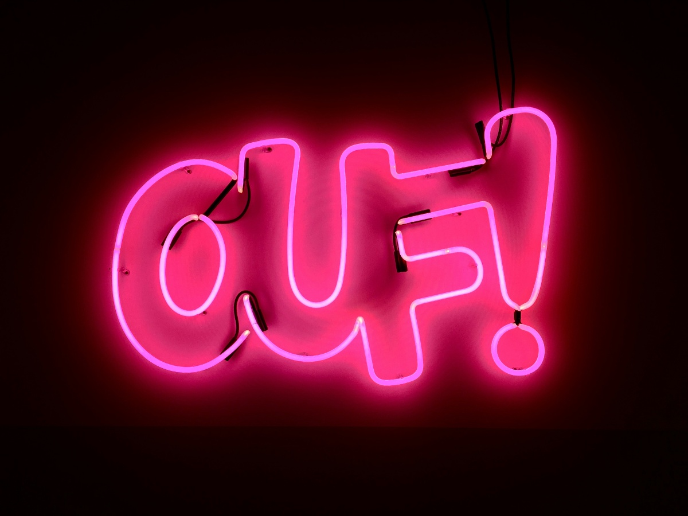

Conocimiento previo
EL CÓMIC:
Es un desarrollo de una historia a través de viñetas ordenadas temporalmente y contadas por los personajes en primer plano. Cuenta con dibujos y con diferentes características del lenguaje:
- VISUAL: imágenes.
- VERBBAL: lo escrito.
¿CÓMO REALIZO MI CÓMIC?
- Pensar un argumento.
- Hacer un guion.
- Diseñar los personajes y los lugares.
- Dibujar.
- Aprender la app.
ELEMENTOS A TENER EN CUENTA:
- Viñetas: cuentan la historia y suelen estar encuadradas.

- Cartelas: recuadros con información de la escena.
- Bocadillo: los usamos para diálogos.
- Globos: para encerrar pensamientos.
- Onomatopeyas: palabras que representan sonidos.

- Símbolos: para expresar estados de ánimo.